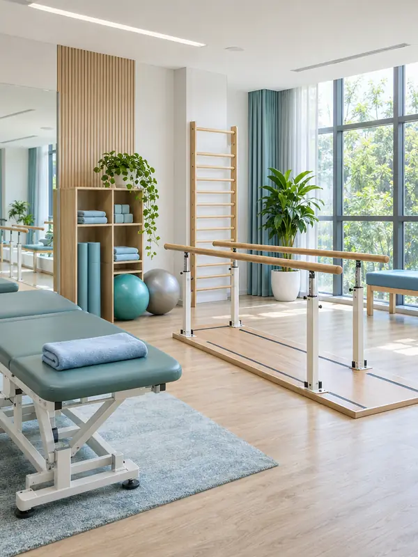
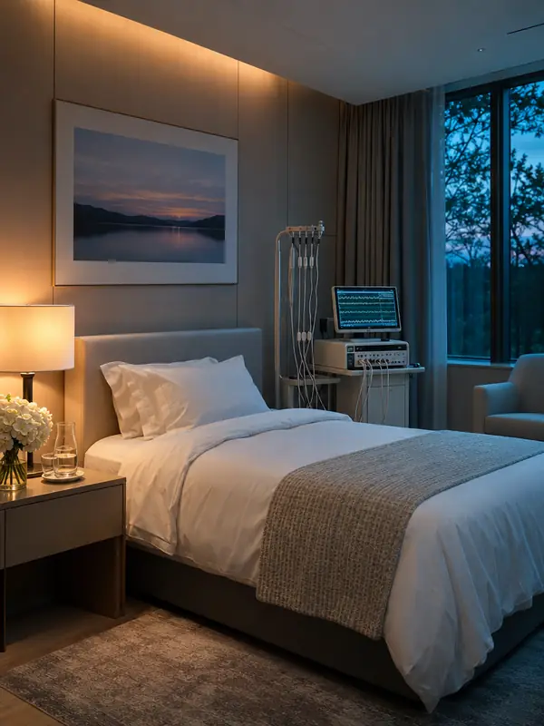

صوفيا ميديكال: مركز رائد في إسرائيل للتأهيل وعلاج الألم واضطرابات النوم
طب متقدم، فريق من الخبراء وحلول مخصصة لتحسين أداء المرضى وصحتهم
اتفاقية مع كلاليت مشلاماستشارة طبية لدى د. علاء محاميد في مجالي التأهيل وطب النوم، بمشاركة ذاتية قدرها 150 شيكل، وفقًا للأهلية وشروط الاتفاقية.
اتفاقية مع BWell ومجدالاستشارة طبية في مجال طب الألم (د. يارونا)، استشارة في المسالك البولية (د. هيثم) وعلاجات طبيعية، بمشاركة ذاتية ووفقًا لشروط البوليصة.
عن المركز
"صوفيا ميديكال" هو مركز طبي خاص ومتقدم في كفار سابا، متخصص في التأهيل الخارجي، العلاج الطبيعي المتقدم، علاجات العلاج الطبيعي، التأهيل العظمي، التأهيل العصبي، التأهيل الجنسي والبولي، علاج الألم وتشخيص وعلاج اضطرابات النوم.
يعمل المركز بقيادة د. علاء محاميد، أخصائي الطب الفيزيائي والتأهيل وخبير اضطرابات النوم، ويقدم خدمات طبية وتأهيلية متقدمة للبالغين والأطفال من خلال فريق متعدد التخصصات وتقنيات مبتكرة.
- التأهيل الخارجي
- العلاج الطبيعي المتقدم
- التأهيل العظمي
- التأهيل العصبي
- التأهيل الجنسي والبولي
- علاج الألم
- تشخيص وعلاج اضطرابات النوم

مجالات العلاج في صوفيا ميديكال
طب تأهيلي متقدم
يركز طب التأهيل على تحسين الأداء الوظيفي وجودة الحياة لدى الأشخاص الذين يعانون من محدودية جسدية أو إعاقة ناتجة عن مرض أو إصابة. تشمل عملية التأهيل استعادة القدرات الوظيفية، وتطوير استراتيجيات تعويضية، واستثمار الإمكانات الشخصية لكل مريض، بهدف تحقيق أقصى قدر من الاستقلالية الوظيفية وتحسين جودة الحياة.
يعمل في صوفيا ميديكال فريق متعدد التخصصات يضم أطباء تأهيل، ومعالجين طبيعيين، ومعالجين وظيفيين، ومهنيين آخرين في المهن الطبية المساندة، يعملون معًا لبناء خطة علاج مخصصة. يقدم المركز العلاج للمرضى بعد السكتة الدماغية، وإصابات الرأس، والأمراض العصبية مثل التصلب المتعدد وباركنسون، وإصابات العمود الفقري، والإصابات العظمية، وبتر الأطراف، والكسور الصعبة، وصعوبات المشي، واضطرابات التوازن وغيرها.
مواصلة القراءةأقل
تتم عملية التأهيل مع مراعاة العوامل المصاحبة التي تؤثر على الأداء وجودة الحياة، ومنها اضطرابات النوم، وضعف الانتصاب، والألم المزمن، والحالة النفسية، والصدمات النفسية، والأفكار الوسواسية وأعراض اضطراب ما بعد الصدمة. يُقدَّم العلاج بنهج يجمع بين الرعاية الطبية والمهن الطبية المساندة، وفقًا لاحتياجات المريض وحالته العامة.
يستخدم المركز تقنيات متقدمة، منها العلاج بالنبضات الكهرومغناطيسية، إلى جانب تقنيات مبتكرة للتأهيل العصبي مثل recoveriX، المخصصة للمرضى بعد السكتة الدماغية ولمرضى الأمراض العصبية مثل التصلب المتعدد.

عيادة الألم في كفار سابا: طبيب ألم رائد وعلاج متقدم
يؤثر الألم المزمن على الأداء والنوم وجودة الحياة. تعمل في صوفيا ميديكال عيادة للألم في كفار سابا تقدم علاجًا متقدمًا للألم بقيادة طبيب ألم رائد، بنهج مبتكر ومتعدد التخصصات ومخصص لكل مريض، مع حلول لجميع أنواع الألم.
نعالج آلام الظهر، وآلام الرقبة، والآلام المزمنة، والألم العصبي، وآلام المفاصل، والفيبروميالغيا، والانزلاق الغضروفي، والألم بعد الإصابات أو العمليات الجراحية، من خلال تشخيص دقيق وفهم عميق لمصدر الألم.
مواصلة القراءةأقل
يجمع العلاج بين تقنيات متقدمة لعلاج الألم والعلاج الطبيعي المتقدم والوخز بالإبر الصينية والعلاج دون أدوية قدر الإمكان، بما في ذلك العلاج بموجات الصدمة، والموجات فوق الصوتية العلاجية، والليزر منخفض الشدة، وتقنيات TENS و PEMF و CES. كما نقدم الوخز بالإبر لآلام الظهر والرقبة والألم المزمن لتحسين الأداء وتخفيف الألم.
يضم الفريق متعدد التخصصات طبيب ألم، وأطباء تأهيل، ومعالجين طبيعيين، ومعالجين بالوخز بالإبر، يعملون معًا لعلاج جذور المشكلة. وعند الحاجة، يُدمج تشخيص وعلاج اضطرابات النوم كجزء من العملية.

تشخيص وعلاج مهني لاضطرابات النوم
تؤثر مشاكل النوم بشكل مباشر على الصحة الجسدية والأداء الإدراكي والمزاج والقدرة على التعامل مع الألم. تعمل في صوفيا ميديكال وحدة مهنية متخصصة في التشخيص الدقيق والعلاج الموجّه لاضطرابات النوم، تجمع بين المعرفة الطبية المتقدمة وتقنيات تشخيص من الطراز الأول.
يشمل التشخيص فحوصات نوم منزلية أو فحوصات كاملة في معهد النوم التابع للمركز، تُقاس فيها مؤشرات مثل التنفس ونشاط الدماغ وحركات العضلات وأنماط النوم المعقدة. وبعد الحصول على النتائج، تُبنى خطة علاج شخصية تشمل الإرشاد لتحسين عادات النوم، وعلاج انقطاع النفس أثناء النوم، وملاءمة أجهزة CPAP عند الحاجة، ودمج تقنيات مكمّلة مثل CES لتقليل التوتر والأرق.
مواصلة القراءةأقل
في صوفيا ميديكال يُقدَّم علاج مهني لاضطرابات النوم على يد خبراء رائدين في طب النوم. وإلى جانب التشخيص المتقدم، نستخدم علاجات مثبتة وفعالة، منها CBT-I: العلاج المعرفي السلوكي للأرق، الذي يُعد خط العلاج الأول والأكثر فعالية لمشاكل النوم المزمنة.
يُصمَّم العلاج لكل مريض على حدة، ويُدمج عند الحاجة مع التأهيل وعلاج الألم، بهدف تحسين جودة النوم والصحة العامة والأداء اليومي.

علاج طبيعي متقدم في كفار سابا
نقدم في صوفيا ميديكال علاجًا طبيعيًا متقدمًا في كفار سابا كجزء من مركز متعدد التخصصات للتأهيل وعلاج الألم، مع استجابة مهنية ودقيقة لمجموعة واسعة من الحالات.
يناسب العلاج آلام الظهر، وآلام الرقبة، والألم المزمن، والإصابات الرياضية، والتأهيل بعد العمليات الجراحية، ومشاكل القوام واضطرابات الحركة، مع بناء خطة علاج شخصية لتحسين الأداء وتخفيف الألم.
مواصلة القراءةأقل
نجمع في المركز مجالات علاج مطلوبة: العلاج الطبيعي العظمي، والعلاج الطبيعي لقاع الحوض، والعلاج الطبيعي للتوازن والدوار (الدهليزي)، والعلاج الطبيعي اللمفاوي والتصريف اللمفاوي، والتأهيل العصبي المتقدم.
يشمل العلاج مزيجًا من العلاج اليدوي المهني، والتمارين التأهيلية المخصصة، والتقنيات المتقدمة مثل العلاج بموجات الصدمة لمهماز العقب والآلام، والموجات فوق الصوتية العلاجية، والليزر منخفض الشدة، وتقنيتي TENS و PEMF، التي تخفف الألم وتحسّن الحركة وتسرّع التعافي.
في إطار النهج متعدد التخصصات، يُدمج العلاج الطبيعي مع طبيب ألم وطبيب تأهيل، ومع الوخز بالإبر لآلام الظهر والرقبة والألم المزمن، بهدف علاج جذور المشكلة وإعادة المريض إلى أداء كامل.

تأهيل عصبي مبتكر بتقنية RecoveriX
تقنية RecoveriX هي تقنية متقدمة للتأهيل العصبي تعتمد على واجهة الدماغ والحاسوب (BCI) والارتجاع العصبي في الوقت الحقيقي.
خلال العلاج يتخيّل المريض الحركة ذهنيًا، فيرصد النظام نشاط الدماغ بواسطة EEG ويفعّل تحفيزًا كهربائيًا وتغذية راجعة بصرية، مما يخلق حلقة حسية حركية تعزز المرونة العصبية والتعافي الوظيفي.
مواصلة القراءةأقل
يناسب العلاج مجموعة متنوعة من الحالات العصبية، منها التأهيل بعد السكتة الدماغية، وإصابات الدماغ الرضحية (TBI)، والتصلب المتعدد (MS) وإصابات عصبية أخرى، حتى في المراحل المزمنة.
في صوفيا ميديكال ندمج RecoveriX ضمن برنامج تأهيل متعدد التخصصات يشمل طبيب تأهيل، وعلاجًا طبيعيًا، وتقنيات متقدمة، بما يتلاءم مع كل مريض، بهدف تحسين الحركة والأداء وجودة الحياة.

فريق متعدد التخصصات
يعمل في المركز فريق متنوع وماهر يضم: أطباء تأهيل، وأطباء استشاريين في مجالات مختلفة، ومعالجين طبيعيين، وأخصائيين نفسيين، ومعالجي نطق ولغة، وفنيي نوم، ومعالجين وظيفيين.
التوصيات
رافقني د. علاء طوال الطريق، بصبر ومعرفة وإنسانية لا تراها كل يوم.
لم أصدق أن النوم يمكن أن يؤثر إلى هذا الحد على جودة حياتي، شكرًا للدكتور على التشخيص المهني والمعاملة الشخصية.
كانت الخدمة سريعة ودقيقة ومهتمة. أوصي بها بشدة لكل من يعاني من مشاكل النوم.
خضعت لسلسلة من فحوصات النوم لدى د. محاميد، وحصلت على علاج دقيق حسّن جودة حياتي. عانيت لسنوات من الأرق، ونجح في تشخيص مشكلة لم تُشخَّص من قبل. أوصي به من كل قلبي!
وصلت إلى د. علاء محاميد، من رواد مجال التأهيل، بعد فترة صعبة من الآلام والضعف. منذ اللقاء الأول شعرت بمعاملة دافئة وإصغاء ومهنية نادرة.
د. محاميد غيّر حياتي. أخيرًا أنام كما يجب بعد سنوات من المعاناة.
خبير حقيقي! عانيت من صعوبة في النوم لفترة طويلة، وعرف د. محاميد كيف يطرح الأسئلة الصحيحة، ويفهم خلفيتي الطبية، ويلائم لي علاجًا شخصيًا.
كمريضة تعاني من مشكلة في التنفس أثناء النوم، كنت بحاجة إلى خبير موثوق يرشدني. كان د. محاميد دقيقًا وهادئًا وصبورًا جدًا. أوصي به بشدة!
منذ المحادثة الأولى عرفت أنني في أيدٍ أمينة. حصلت على إجابات واضحة وعلاج ممتاز.
توصيات بالفيديو
لأنه لا شيء يضاهي الاستماع إلى من مرّوا بالتجربة. مقاطع الفيديو بالعبرية.
أسئلة شائعة
لم تجدوا إجابة؟ اتركوا تفاصيلكم وسنعود إليكم.
ما هو فحص النوم وكيف يُجرى؟
يفحص فحص النوم مراحل النوم، والتنفس، ونشاط الدماغ، وحركات الجسم، ونسبة تشبع الدم بالأكسجين خلال الليل. يمكن إجراء الفحص في معهد النوم التابع للمركز أو في منزل المريض، وفقًا للحالة الطبية والحاجة.
هل يمكن إجراء فحص النوم في المنزل؟
بالتأكيد. يوفر المركز أنظمة متقدمة لفحوصات النوم المنزلية، تشمل إرشادًا كاملًا ومرافقة فني طبي. يُجرى الفحص المنزلي في البيئة الطبيعية للمريض، مما يتيح نتائج موثوقة وراحة قصوى.
لمن يناسب التأهيل الخارجي؟
يناسب التأهيل الخارجي المرضى ذوي الحالة الطبية المستقرة، القادرين على الوصول إلى المركز بشكل مستقل أو برفقة أفراد العائلة أو مرافق. وهو حل مثالي لمن يرغب في مواصلة العيش في منزله أثناء تلقي علاج مهني ومتواصل.
كم تستغرق عملية التأهيل؟
تختلف مدة التأهيل حسب نوع الإصابة والحالة الوظيفية. وغالبًا ما تمتد العملية من عدة أسابيع إلى عدة أشهر، مع إجراء تقييمات دورية وملاءمة الخطة وفقًا لتقدم المريض.
هل يمكن الدمج بين علاج النوم والعلاج التأهيلي؟
بالتأكيد. هذه إحدى مزايا صوفيا ميديكال: نهج شمولي يعالج المشكلة التأهيلية وجوانب النوم والحالة النفسية كمنظومة واحدة.
هل العلاجات آمنة؟
نعم. يُنفَّذ كل علاج تحت إشراف طبي كامل من قبل طاقم مؤهل، وفقًا للتوجيهات المهنية لوزارة الصحة.